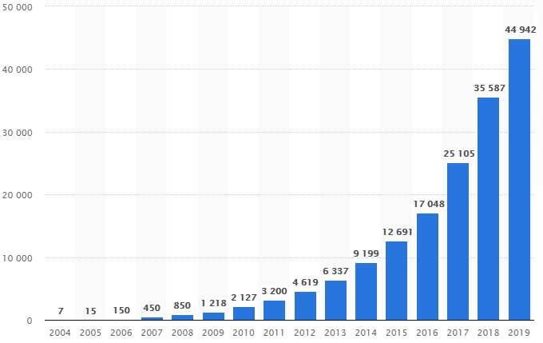
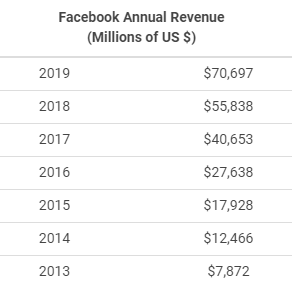

Մարկ Ցուկերբերգ


Ուսանողական տարիներ
Դեռ ուսանողական տարիներին Մարկն առանձնանում էր իր յուրահատուկ վարքով։ Օրինակ նա մերժել էր Մայքրոսոֆթ
ընկերության ներկայացուցիչների հետ հանդիպման առաջարկը միայն այն պատճառով, որ հանդիպումը նշանակված էր
առավոտյան ժամը 8-ին։ «Այդ ժամանակ ես քնած եմ», -ասել էր նա։ Մի անգամ էլ նա հետաձգել էր Yahoo ընկերության
հետ
բանակցությունները, քանի որ դրանք նշանակված էին հանգստյան օրերին, թեև խոսքը միլիարդավոր դոլարների մասին
էր։
Հարվարդում, որքան էլ տարօրինակ է, Մարկն ուսումնասիրում էր ոչ թե համակարգչային գիտելիքներ, այլ
հոգեբանություն, թեև համակարգչային տեխնիկայի դասերի հաճախում էր։ Թերևս մարդկային հոգեբանության գիտելիքներն
էլ
կարևոր նշանակություն են ունենում ֆեյսբուքի կերտման պատմության մեջ։ Չնայած մինչև հիմա պարզ չի, թե արդյոք
ֆեյսբուքի գաղափարը Մարկին է պատկանում, թե նրա ընկերներին:
Մարկ Ցուկերբերգը չի ավարտել իր բարձրագույն կրթությունը. 2002-ին ընդունվել է Հարվարդի համալսարան:
Նա
իր հետաքրքրության ոլորտը նշեց որպես «C, C++, Java, Visual Basic, VBscript, JavaScript, PHP և ASP.Net»:
Ցուկերբերգը կոչով իրեն բազմիցս բնութագրել է որպես Հակեր: Դեռևս քոլեջում սովորելու ընթացքում
Microsoft-ի աշխատակիցները ուշադրություն հրավիրեցին Մարկի վրա այն բանից հետո, երբ նա գրեց Synapse ծրագիրը,
որը համակարգչին հնարավորություն տվեց ինքնուրույն կազմել իր տիրոջ երաժշտական հիթերի հաջորդականությունը:
Վերելք
2003 թվականին Մարկն ու իր համակուրսեցիները աշխատում էին ConnectU նախագծի վրա, որն իրենից ներկայացնում
էր այն, ինչ մենք հիմա սոցիալական ցանց ենք կոչում։ Այն նախատեսված էր ուսանողների համար, պլանները լուրջ
էին, անգամ բիզնես-պլան կար, իսկ եկամուտ նախատեսվում էր ստանալ գովազդից։ Եվ ահա Մարկը
զբաղվում էր ConnectU-ով։ Այդ նախագծի հեղինակները՝ Ուինքլվոս եղբայրներն ու Դիվի Նարենդրան կարևոր էին
համարում, որ այն ժամանակին պատրաստ լինի։ Մարկը հավաստիացնում է նրանց, որ ամեն ինչ պատրաստ կլինի, սակայն
դրա փոխարեն գրանցում է thefacebook.com դոմենը։ Հետաքրքիր է, որ մինչև վերջին պահը տղաները գիտեին, թե Մարկն
աշխատում է ConnectU-ի վրա և տեղյակ չէին, թե ինչ է կատարվում իրենց մեջքի ետևում։ Միայն մեկ ամիս անց՝ 2004
թվականի փետրվարի 4-ին, երբ մեկնարկեց thefacebook.com-ը, որ ամբողջությամբ կրկնում էր ConnectU-ի
գաղափարները, նրանք հասկացան, թե ինչ է կատարվել։ Նրանք միանգամից վարձեցին այլ ծրագրավորողների, սակայն
ուշացան։ Արդեն գոյություն ուներ Ֆեյսբուքը։
Սկզբնական շրջանում the thefacebook.com-ը միայն Հարվարդի համար էր և միայն ամիսներ անց այն ընդարձակվեց մինչև
երկրի բոլոր համալսարաններ։ 2006 թ. ֆեյսբուք-ը հասանելի էր ողջ աշխարհի համար։ Իսկ հետո եկան միլիոնները։
Երկրաչափական պրոգրեսիայով աճում էր ինչպես օգտատերերի, այնպես էլ միլիոնների թիվը։ ֆեյսբուք-ն արդեն երկար
տարիներ
ամերիկյան կայքերի շարքում ամենամեծ հաճախելությունն ունեցող կայքն է։ Կայքը թարգմանված է 15 լեզուներով՝
ներառյալ
հայերենը։ Օգտագործելով մարդու շփվելու կարիքը՝ Մարկ Ցուկերբերգը բառից բուն իմաստով դարձավ միլիարդատեր։ 2010
թվականին Forbes ամսագիրը Մարկ Ցուկերբերգին ճանաչել է ամենաերիտասարդ միլիարդատերն աշխարհում։ Նրա կարողությունն
այդ ժամանակ կազմում էր 4 մլրդ ԱՄՆ դոլար։ ԱՄՆ ամենահարուստ 400 մարդկանց ցուցակում, որ կազմվել էր 2011
թվականին։
Եկամուտ և Հարստություն
2014-ի հոկտեմբերին Ցուկերբերգը 100 միլիոն դոլար ծախսեց Կաուայի հյուսիսային ափին հողամասեր գնելու համար,
որտեղ նա որոշեց կառուցել 280 հա ընտանեկան սեփականություն: Քիչ անց նա գնեց իր կալվածքին հարող երկու
հողամաս ընդհանուր 30 միլիոն դոլարով:
Ինչպես հայտնում է Bloomberg գործակալությունը, Մարկ Ցուկերբերգի կարողությունը երկու օրվա ընթացքում (2018
թ. Մարտի 19-20) 8.1 միլիարդ դոլարով նվազել է ՝ բրիտանական Cambridge Analytics վերլուծական ընկերության հետ
կապված սկանդալի պատճառով:
2010 թվականից Մարկը ընդգրկվել է Forbes-ի աշխարհի ամենաազդեցիկ մարդկանց ցուցակում: 2018-ին նա այս
վարկանիշում զբաղեցնում էր 13-րդ տեղը, չնայած ավելի վաղ այն հասել էր 10-րդ հորիզոնական:
Այսօր Մարկի կարողությունը կազմում է 99.1 միլիարդ դոլար:
Facebook
Ծախսերը
Facebook-ն իր սոցիալական ցանցային պլատֆորմից այն կողմ առաջարկում է այլ ապրանքներ և ծառայություններ, այդ
թվում՝ Facebook Messenger, Facebook Watch և Facebook Portal: Այն նաև ձեռք է բերել Instagram, WhatsApp, Oculus VR,
Giphy և Mapillary, և ունի 9,9% բաժնեմաս Jio Platforms-ում:
2014 թվականին Facebook-ը 19.3 միլիարդ դոլարով գնել է WhatsApp հավելվածը:
2019 թվականի տվյալներով Facebook-ում աշխատում են 44.942 մարդ:


Facebook սոցիալական ցանցի սոցիալական ընկերությունն իր նախնական հանրային առաջարկը (IPO) անցկացրեց 2012 թ.-ի
ուրբաթ, ժամը 18-ին: IPO-ն ամենամեծն էր տեխնոլոգիայի ոլորտում և ամենամեծը ինտերնետի պատմության մեջ, որի
առավելագույն շուկայական կապիտալացումը կազմում էր ավելի քան 104 միլիարդ դոլար:
Տարիներ շարունակ Facebook-ը և Ցուկերբերգը դիմակայել են և՛ գնումներին, և՛ ընկերությանը հասարակությանը
հասցնելուն: Reuters-ի ֆինանսական բլոգեր Ֆելիքս Սալմոնի կարծիքով՝ ընկերության հիմնական պատճառը, որ
ընկերությունը որոշեց հանրային դառնալ, այն է, որ այն հատեց 500 բաժնետերերի շեմը:
Հաղորդվում է, որ Facebook-ը մերժեց 75 միլիոն ԱՄՆ դոլարի առաջարկը Viacom-ին 2006թ. Նույն թվականին Yahoo-ն
փորձեց ընկերությունը գնել 1 միլիարդ դոլարով, բայց Ցուկերբերգը մերժեց: Նաև այդ տարի BusinessWeek-ը
հաղորդեց ընկերության համար 2 միլիարդի դոլարի գնահատման:
Facebook-ն իսկապես ընդունեց ընկերությունների ներդրումները: 2007 թ.-ին Microsoft-ը ջախջախեց Google-ին` 1.6% բաժնետոմս գնելու համար, 240
միլիոն դոլարով` Facebook-ին տալով այդ ժամանակ 15 միլիարդ դոլար: Microsoft–ը գնեց
նախընտրելի բաժնետոմսեր, ինչը նշանակում էր, որ ընկերության իրական գնահատումը 15 միլիարդ դոլարից զգալիորեն
ցածր
կլինի: Միևնույն ժամանակ, 2009 թ.-ին այդ գնահատումն իջավ 10 մլրդ դոլարի, երբ Digital Sky Technologies-ը 200
միլիոն դոլարով գնեց գրեթե 2% բաժնետոմս, 0.4%-ով ավելի մեծ բաժնեմաս, քան Microsoft-ն էր գնել, ու ավելի ցածր գնով: 2011
թ.-ին ընկերությունը կատարված ներդրումային հաշվետվությունը գնահատել է 50 միլիարդ դոլար:
2010թ.-ին Ցուկերբերգը ցանկանում էր սպասել նախնական հրապարակային առաջարկի անցկացմանը՝ ասելով որ «մենք հաստատ
չենք շտապում»: Բայց քանի որ մինչև 2012 թվականը Facebook-ն ուներ ավելի քան 500 կլոր բաժնետեր, SEC-ի բացահայտման կանոնները սկսվում են հաջորդ տարվանից: Ցուկերբերգը քիչ ընտրություն ուներ, թե արդյո՞ք պետք է միանգամից IPO կատարվեր:
Բարձր մակարդակի պլատֆորմի բաղադրիչներ
2007 թվականից սկսած, Facebook-ը ստեղծեց տվյալների փոխանակման գործընկերություն առնվազն 60 հեռախոս արտադրողների
հետ, ներառյալ Apple-ը, Amazon-ը, BlackBerry-ն, Microsoft-ը և Samsung-ը: Այդ արտադրողներին տրամադրվել
են Facebook-ի օգտագործողների տվյալներ՝ առանց օգտագործողների համաձայնության: Գործընկերությունների մեծ
մասը պահպանվել է 2018 թվականից ի վեր, երբ գործընկերության մասին առաջին անգամ հրապարակավ հայտնվեց:
Graph API-ն Facebook պլատֆորմի միջուկն է, որը հնարավորություն է տալիս մշակողներին կարդալ և գրել տվյալներ
Facebook-ում: Graph API-ն ներկայացնում է պարզ, հետևողական տեսք Facebook սոցիալական գրաֆիկի վերաբերյալ, որը
միատեսակ ներկայացնում է գծապատկերում առկա օբյեկտները (օրինակ՝ մարդիկ, լուսանկարներ, իրադարձություններ և էջեր)
և նրանց կապերը (օրինակ՝ ընկերական հարաբերություններ, ընդհանուր բովանդակություն և լուսանկարների պիտակ):
Հետագայում Facebook-ը ստեղծեց GraphQL-ը և այն հասանելի դարձրեց բոլորի համար:

Facebook-ի հավելվածների շատ մշակողներ փորձել են վիրուսային ծրագրեր ստեղծել: 2007-ի աշնանը Սթենֆորդի համալսարանը
նույնիսկ դաս էր կազմակերպել՝ «Համակարգչային գիտություն» (CS)377W խորագրով: Դասի կողմից ստեղծված բազմաթիվ
ծրագրեր մեծ հաջողություն ունեցան և դասվեցին Facebook-ի լավագույն ծրագրերի շարքում, որոնցից ոմանք մեկ ամսվա
ընթացքում ձեռք բերեցին 3.5 միլիոն օգտագտատեր: